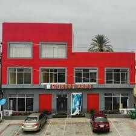

مقهى مريح يقدم القهوة والوجبات الخفيفة والمعجنات الطازجة
مقهى ميفيش هو مقهى دافئ ومرحب في يولا مثالي لعشاق القهوة وللباحثين عن أجواء هادئة. يتخصص المكان في تقديم مشروبات ذات جودة ومعجنات مخبوزة طازجة.
يوفر المقهى بيئة دافئة ومريحة مناسبة للتواصل الاجتماعي أو العمل أو الاسترخاء. يضمن الطاقم الترحيبي تجربة ممتعة لكل زائر.
الموقع: يولا، ولاية أداماوا
الخدمات: مقهى، معجنات، وجبات خفيفة
الساعات: مفتوح يوميًا